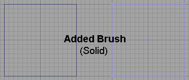
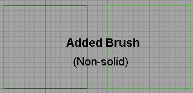
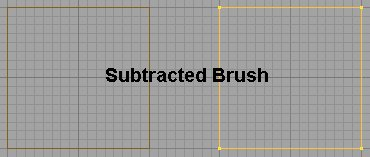
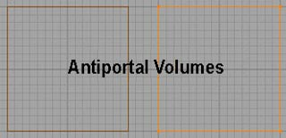
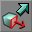

UDN
Search public documentation:
BspBrushesTutorial
日本語訳
한국어
Interested in the Unreal Engine?
Visit the Unreal Technology site.
Looking for jobs and company info?
Check out the Epic games site.
Questions about support via UDN?
Contact the UDN Staff
한국어
Interested in the Unreal Engine?
Visit the Unreal Technology site.
Looking for jobs and company info?
Check out the Epic games site.
Questions about support via UDN?
Contact the UDN Staff
BSP Brushes
Document Summary: An introduction to BSP Brushes, including creation and modification tools. Includes links to relevant documents. Excellent for beginners. Document Changelog: Last updated by Michiel Hendriks. Previously updated by Tom Lin (DemiurgeStudios?), for document summary. Original author was Tony Garcia (UdnStaff).BSP Brush Introduction
One should note that the term BSP (Binary Space Partitioning) is a data structure that is used to organize objects within a space of the level and not semantically the correct term for a type of geometry. CSG (Constructive Solid Geometry) is a more accurate term for the geometry created within the unreal engine by adding and subtracting brushes, but BSP has become the terminology to describe this geometry and it's stuck like a bad nickname. That being said, just keep in mind that the terms BSP and CSG are often used interchangeably to refer to the geometry created within the editor using brushes. BSP Brushes are the basic building blocks of a level. You can build a level with almost no BSP brushes, but you still have to have at least one BSP brush to "cut out" where the world is. You have to think of the "void" as a solid and then subtract out an area where the world exists. You subtract out this area with a BSP brush.Uses for BSP brushes.
While StaticMeshes are now primarily used to populate levels with geometry, there are still many uses for BSP Brushes. Here are some of these uses linking to documents describing these in greater detail:- The main "box(es)" where your level exists
- Sky boxes
- Zone Portals
- Antiportal Volumes
- special Volumes
- MirrorsAndWarpZones
Types of BSP brushes
There are three types of BSP Brush you will use:- Subtractive - Used to carve out spaces where the level exists.
- Additive
- Soild -- used for any thing that will fill up a space.
- Non-solid -- used for sheets such as zoneportals/antiportals
- Antiportal Volumes - used for occluding all geometry types within the level.




Creating BSP Brushes
 You create the BSP brushes by selecting your primitive, setting the size by right clicking the icon and plugging in numbers.
You create the BSP brushes by selecting your primitive, setting the size by right clicking the icon and plugging in numbers.
 Then use the CSG buttons to add
Then use the CSG buttons to add Modifying BSP Brushes
You can modify your BSP brush several ways. You can re-shape it and scale it, move the vertices around, clip the brush, etc... to manipulate the brush to just the shape you need. You can access the modes to modify your brush a couple different ways. One is to go to the Menu at the top and go to Brush, and select your method from the menu. Also, you can select the mode from the tool bar.
Also, you can select the mode from the tool bar.
 And you can right-click the brush to get a menu to choose from. You can also access the Brush Properties (and some other useful functions) from here.
And you can right-click the brush to get a menu to choose from. You can also access the Brush Properties (and some other useful functions) from here.
Vertex Editing
You can select vertex editing mode from the tool bar, or you can simply click a vertex and hold CTRL while moving the vertex. More information on vertex editing can be found here in the VertexEditing document.Brush Scaling
 Here you can plug numbers into the different axes to get the size you want. For example if I had a 256 cubic brush and I wanted it to be twice as tall (512), but the same length and width I would put a 2 in the Z axis box and leave the others at one.
Here you can plug numbers into the different axes to get the size you want. For example if I had a 256 cubic brush and I wanted it to be twice as tall (512), but the same length and width I would put a 2 in the Z axis box and leave the others at one.
Brush Rotation
Brush Clipping
Face Dragging

By going into Face Drag mode you can move a face, or one side of your brush. This will allow you to "stretch" a brush or to make it slant for ramps, etc...Brush Properties
 Accessed through right-clicking the brush, there are several functions here. I will not duplicate anything here that you can read elsewhere but I will outline the functions that are accessed through this menu.
Accessed through right-clicking the brush, there are several functions here. I will not duplicate anything here that you can read elsewhere but I will outline the functions that are accessed through this menu.
Edit
(Note: these only work with added or subtracted brushes)- Cut - Deletes and copies brush to clipboard
- Copy - Copies brush to clipboard
- Paste - Pastes the brush from the clipboard into the world to...
- To Original Location
- Here
- At World Origin
Reset
- Move to Origin - Moves the brush back to the center of the map with it's pivot point at the 0,0,0 coordinate.
- Reset Pivot - Use Pivot below
- Reset Rotation - If you have rotated your brush and want it back to its original rotation use this.
- Reset Scaling - IF you have resized or scaled your brush this will set it back to it's original size.
- Reset All - This will reset both the scaling and rotation of the brush, as well as move it back to it's origin.
Set
- Location/Rotation from Camera - This sets the orientation and position to align the camera of the active window.
Transform
- Scaling -see Brush Scaling
- Mirroring - mirrors the brush on the given axis.
- Transform Permanently - when you scale or rotate the brush the editor will "know" this (that's why you can reset) so transforming permanently will make your scale/rotation permanent on the brush. Also, when vertex editing you will sometimes get a brush that will disappear from view when you zoom in on it. Transforming permanently will fix that.
Order
Changes the drawing order of the brushes. Not used much any more, but handy if you forget that subtracted brushes go first and then added ones go inside that :)Polygons
You can merge or separate the polygons of a brush here. If you have a face that has been split and you want to reduce it to one poly use this. The faces must be coplanar, with the same texture and aligned the same for this to work. You can reverse this by separating them.Type
You can change a brush from a solid to a non-solid. Semi-solids are obsolete.Pivot
Use this to set or reset the position of the pivot point.CSG
(Note: these only work with added or subtracted brushes)- Additive - changes brush to an added brush.
- Subtractive - changes brush to a subtracted brush.
Convert
- To Static Mesh - Converts the selected geometry into a static mesh.
- To Brush - Creates a brush in the form of the selected geometry.
Align
- Snap to Floor - Moves geometry to the base of the base of the BSP zone that it is within.
- Align to Floor - Aligns to the orientation of the BSP zone that it is within.